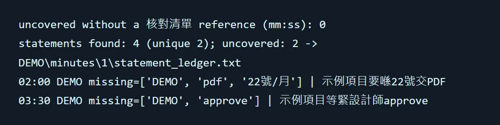

← 全部作品／ 工作流程


交付成果錄音陳述 → 遺漏清單
ENGINEERING NOTES
我怎樣做
這項 Skill 補充會議紀錄流程的覆蓋檢查，讓撰稿者有依據地追查遺漏。
抽取陳述
把錄音拆成可單獨核對的事項，保留原句和時間位置。
對照正文
逐項找出草稿相應段落，區分已涵蓋與尚欠交代的內容。
回到來源
把未對上的事項交還撰稿者，核對後才補寫。
- AI Skills
- Python
- ASR

ENGINEERING NOTES
這項 Skill 補充會議紀錄流程的覆蓋檢查，讓撰稿者有依據地追查遺漏。
把錄音拆成可單獨核對的事項，保留原句和時間位置。
逐項找出草稿相應段落，區分已涵蓋與尚欠交代的內容。
把未對上的事項交還撰稿者，核對後才補寫。